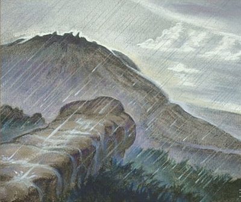
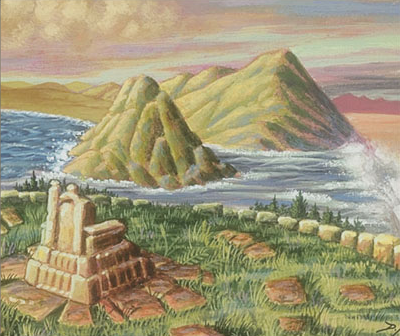
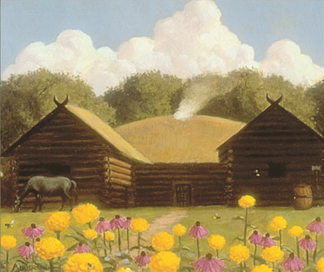

<!DOCTYPE html>
<html>
	<head>
		<link rel="stylesheet" href="leaflet/leaflet.css">

		<script src="leaflet/leaflet.js"></script>

		<style>
			html, body {
				height: 100%;
				margin: 0;
			}
			.leaflet-container {
				width: 800px;
				height: 600px;
				max-width: 100%;
				max-height: 100%;
			}
			.popup-img {
				display: block;
  			margin-left: auto;
  			margin-right: auto;
  			width: 75%;
			}
			.context-menu {
				cursor: context-menu;
			}
		</style>
	</head>

	<body>
		<div class="context-menu" id='map' style="width: 100%; height: 100%;"></div>

		<script type="text/javascript">
			var map = L.map('map', {
				crs: L.CRS.Simple,
				minZoom: -2.5,
				maxZoom: -0.5,
			});

			var bounds = [[0, 0], [6639, 9890]];
			
			map.fitBounds(bounds);
			map.setMaxBounds([[0, 0], [6639, 9890]]); // Better way to write this?
			
			var image = L.imageOverlay('images/Middle-earth-Basemap.jpg', bounds).addTo(map);

			map.setView([4535, 3553], -0.5);

			function onMapClick(e){
				alert(e.latlng)
			}
			map.on('click', onMapClick);

			var marker = L.marker([4535, 3553],{
				title: "Weathertop",
			}).addTo(map).bindPopup('<h1>Weathertop</h1><p><i>On the top they found... a wide ring of ancient stone-work, now crumbling or covered with age-long grass. But in the centre a cairn of broken stones had been piled." -LotRI</i></p>')

			var marker = L.marker([2752, 6178],{
				title: "Amon Hen",
			}).addTo(map).bindPopup('<b>Amon Hen</b><br><br><i>... the Hill of the Eye of the Men of Numenor -LotRII</i>')

			var marker = L.marker([4900, 5999],{
				title: "Beorn's House",
			}).addTo(map).bindPopup('<b>Beorns House</b><br><br><i>They soon came to a wooden gate, high and broad, beyond which they could see gardens and a cluster of low wooden buildings, some thatched and made of unshaped logs; barns, stables, sheds, and a long low wooden house. -Hob</i>')

		</script>
	</body>
</html>
